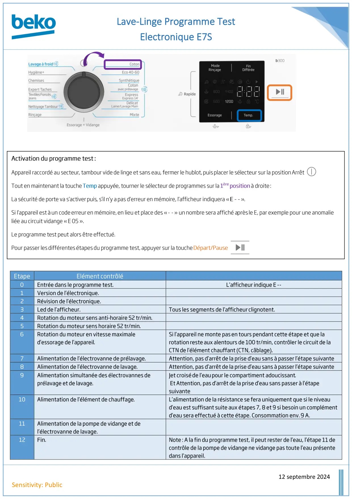
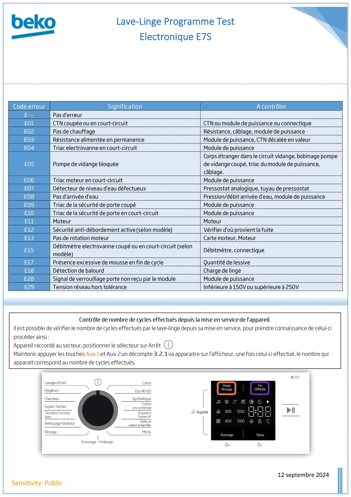

Prog Test Lave Linge Electronique E7S

Lave-Linge Programme TestElectronique E7S12 septembre 2024Sensitivity: PublicEtapeElément contrôlé0Entrée dans le programme test.L’afficheur indique E--1Version de l’électronique.2Révision de l’électronique.3Led de l’afficheur.Tous les segments de l’afficheurclignotent.4Rotation du moteur sens anti-horaire 52 tr/min.5Rotation du moteur sens horaire 52 tr/min.6Rotation du moteur en vitesse maximaled’essorage de l’appareil.Si l’appareil ne monte pasen tours pendant cette étape et que larotationresteaux alentours de 100 tr/min, contrôler le circuit de laCTN de l’élément chauffant (CTN, câblage).7Alimentation de l’électrovanne de prélavage.Attention, pas d’arrêt de la prise d’eau sans à passer l’étape suivante8Alimentation de l’électrovanne de lavage.Attention, pas d’arrêt de la prise d’eau sans à passer l’étape suivante9Alimentation simultanée des électrovannes deprélavage et de lavage.Jet croiséde l’eaupour le compartiment adoucissant.EtAttention, pas d’arrêt de la prise d’eau sans passer à l’étapesuivante10Alimentation de l’élément de chauffage.L’alimentation de la résistance se fera uniquement que si le niveaud’eau est suffisant suite aux étapes 7, 8 et 9 si besoin un complémentd’eau sera effectué à cette étape. Consommation env.9 A.11Alimentation de la pompe de vidange et del’électrovanne de lavage.12Fin.Note: A la fin du programme test, il peut rester de l’eau, l’étape 11 decontrôle de la pompe de vidange ne vidange pas toute l’eau présentedans l’appareil.Activation du programme test:Appareil raccordé au secteur,tambour videde linge et sans eau, fermer le hublot,puisplacer le sélecteur sur la positionArrêtTout en maintenant la toucheTempappuyée, tourner le sélecteur de programmes sur la1èrepositionà droite:La sécurité de porte va s’activerpuis,s’il n’y apas d’erreur en mémoire, l’afficheur indiquera «E--».Si l’appareil estàun codeerreuren mémoire,en lieu et place des «--» unnombre sera affiché aprèsle E, par exemple pour une anomalieliée au circuit vidange «E05».Le programme test peut alors être effectué.Pour passer lesdifférentesétapesdu programme test,appuyer sur la toucheDépart/Pause
1 / 2
Lave-Linge Programme TestElectronique E7S12 septembre 2024Sensitivity: PublicCode erreurSignificationA contrôlerE--Pas d’erreurE01CTN coupée ou en court-circuitCTN ou module de puissance ou connectiqueE02Pas de chauffageRésistance, câblage, module de puissanceE03Résistance alimentée en permanenceModule de puissance, CTN décalée en valeurE04Triac electrovanne en court-circuitModule de puissanceE05Pompe devidange bloquéeCorps étranger dans le circuit vidange, bobinage pompede vidangecoupé,triac dumodule de puissance,câblage.E06Triac moteur en court-circuitModule de puissanceE07Détecteur de niveau d’eau défectueuxPressostat analogique, tuyau de pressostatE08Pas d’arrivée d’eauPression/débit arrivée d’eau, module de puissanceE09Triac de la sécurité de porte coupéModule de puissanceE10Triac de la sécurité de porte en court-circuitModule de puissanceE11MoteurMoteurE12Sécurité anti-débordement active(selon modèle)Vérifier d’où provient la fuiteE13Pas de rotation moteurCarte moteur, MoteurE15Débitmètre electrovanne coupé ou en court-circuit (selonmodèle)Débitmètre, connectiqueE17Présence excessive de mousse en fin de cycleQuantité de lessiveE18Détection de balourdCharge de lingeE28Signal de verrouillage porte non reçu par le moduleModule de puissanceE29Tension réseau hors toléranceInférieure à 150Vousupérieureà 250VContrôle de nombre de cycles effectués depuis lamise en servicede l’appareil.Il est possible de vérifier le nombre de cycles effectués par le lave-linge depuis sa mise en service, pour prendre connaissance de celui-ciprocéder ainsi:Appareil raccordé au secteur, positionner le sélecteur sur ArrêtMaintenir appuyer les touchesAux 1etAux 2un décompte3.2.1va apparaitre sur l’afficheur, une fois celui-ci effectué, le nombre quiapparait correspond au nombre de cycles effectués.
2 / 2